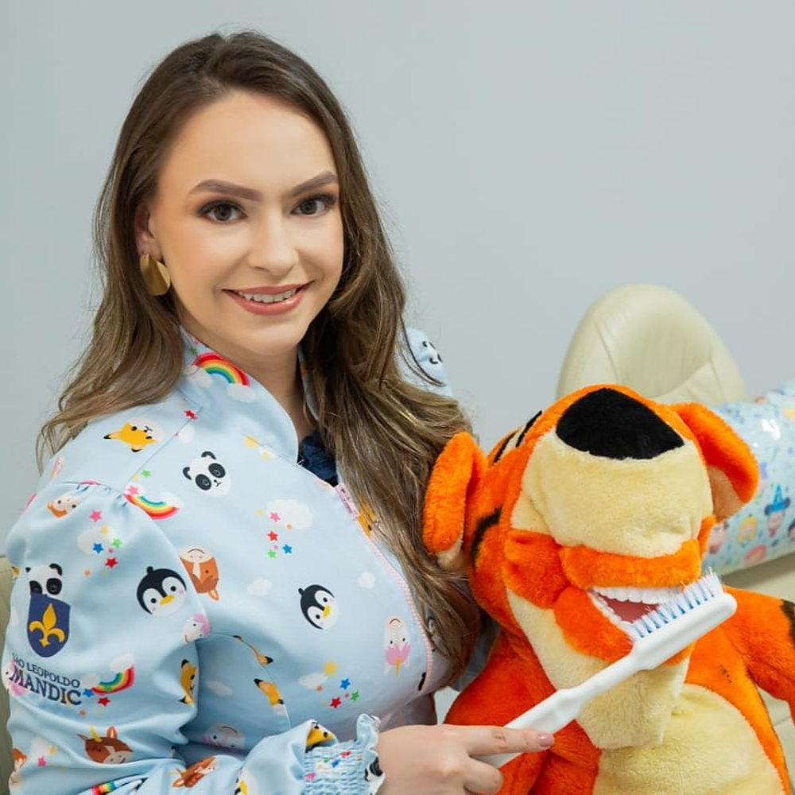
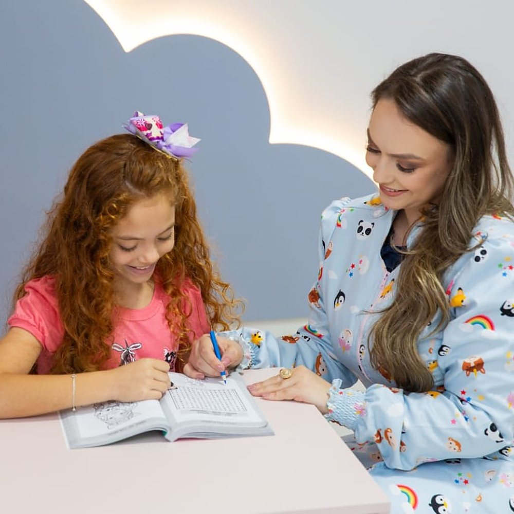
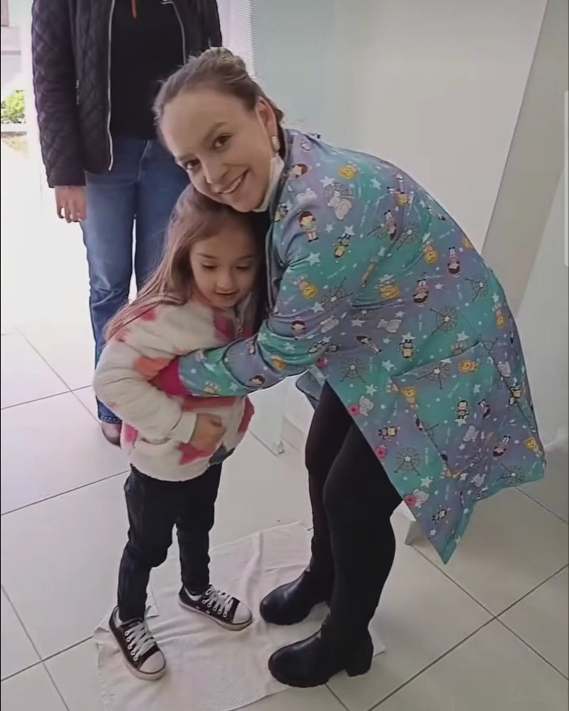

Primeira consulta · Odonto Kids
A primeira visita ao dentista, sem medo.
Quando levar, o que acontece na consulta e como preparar a criança em casa. Para bebês, crianças pequenas e crianças que já tiveram uma experiência ruim em outro lugar.
Dra. Maiara Milani · Cirurgiã-dentista · CRO-PR 33549* · Odontopediatria*

A Tia May e o Tigrão, que conhece todos os instrumentos primeiro
Com que idade levar
Antes do primeiro aniversário. E depois, a cada fase.
A primeira consulta não espera o problema aparecer. Ela começa pela conversa com os pais, e acompanha a criança enquanto a boca cresce.
- Até 1 anoBebê
Assim que nascer o primeiro dente, ou até o primeiro aniversário. A consulta é quase toda com os pais: amamentação, mamadeira, chupeta, como limpar a gengiva e os primeiros dentinhos.
- 1 a 3 anosAdaptação
Visitas curtas, com brincadeira, para a criança conhecer o espaço, a cadeira e a Tia May. A escovação feita pelos pais é o assunto principal. O exame acontece no colo, se for o que deixa a criança tranquila.
- 3 a 6 anosParticipando
A criança já entende e participa. Avaliação completa, limpeza, flúor e o primeiro olhar sobre mordida e respiração, que podem pedir aparelho ainda no dente de leite.
- 6 a 12 anosTroca de dentes
Acompanhamento dos dentes permanentes que nascem, selantes quando indicados, e a avaliação ortopédica dos maxilares, a área de destaque da clínica.
* orientações gerais de odontopediatria, a revisar pela Dra. May antes de publicar.
O que acontece na consulta
Nada acontece sem a criança entender antes.

Chegada e brincadeira
A criança entra pela sala dos brinquedos, não pela cadeira. Desenho, pelúcias e tempo para se sentir em casa.
Conversa com os pais
Alimentação, hábitos, histórico de saúde, medos e o que já aconteceu em outras consultas. É daqui que sai o jeito de atender aquela criança.
Mostrar antes de fazer
Cada instrumento aparece primeiro no Tigrão: a escova, o espelhinho, a luz, o "ventinho". A criança toca, pergunta e entende.
Exame no tempo da criança
Na cadeira, no colo ou na mesinha. O exame avança até onde a criança deixa. Se precisar de mais uma visita só para conhecer, ela acontece.
Orientações e o plano
A Dra. explica aos pais o que viu, o que fazer em casa e, se houver tratamento, como ele será feito, em quantas vezes e por quê. Valores são explicados nessa hora.
Presente, e um dia o Certificado
Toda consulta termina com um presente escolhido na gaveta. Quando o tratamento acaba, a criança recebe o Certificado de Coragem.
Como preparar em casa
Quatro coisas que ajudam antes da consulta.
Fale pouco, e positivo
"Vamos conhecer a Tia May e os brinquedos" basta. Evite "não vai doer" e "não precisa ter medo": a criança guarda a palavra "doer" e a palavra "medo".
Brinque de dentista
Com um bichinho de pelúcia: contar os dentes, abrir a boca bem grande, passar a escova. Na consulta, o Tigrão faz exatamente isso.
Escolha a hora certa
Criança descansada e alimentada. Traga o objeto de apego, e evite marcar na hora do sono ou logo depois da escola, quando ela já está cansada.
Conte o que já aconteceu
Se a criança já passou por uma experiência ruim, ou tem alguma condição de saúde, conte no WhatsApp antes. A consulta é preparada a partir disso.
Crianças com autismo
Verbais e não verbais, cada uma do seu jeito.
A Odonto Kids atende crianças com TEA com manejo específico para cada perfil. A primeira visita costuma ser só adaptação: conhecer o espaço, os sons, a luz e a Dra., sem exame. O tratamento começa quando a criança estiver pronta.
- Horário mais tranquilo da agenda, sem outras crianças na sala.
- Luz, som e tempo ajustados ao que a família contar no WhatsApp.
- Objeto de apego, fones e recursos visuais são bem-vindos.
- Pais participam do manejo, do jeito que já funciona em casa.

Vamos marcar?
A primeira visita pode ser só para conhecer.
Conte no WhatsApp a idade do seu filho e o que você percebeu. A equipe responde com os horários disponíveis.